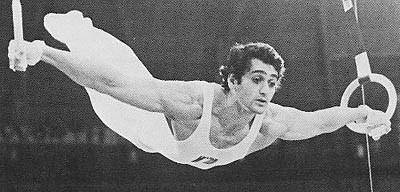

Henri Boerio (FRA)
1976 Olympic HB Bronze Medalist
1979 European PB Bronze Medalist

Medal Total
Olympic Games: 1
Bronze
European Championships: 1 Bronze
Henri was born on June 13, 1952.
Competition Results
1971 1972 1973 1974 1975 1976 1977 1978 1979 1980 This page was created on December
17, 2000 and was last updated on May 16, 2026.
Jr. FRA-CSSR Dual Meet: 2nd Team, 1st AA, 1st FX
Golden Sands International: 5th AA
Blume Memorial: 5th AA
European Championships: 25th AA
Milk Meet: 8th AA
World Championships: 11th Team, 24th AA
Blume Memorial: 1st AA
Champions All: 4th AA
European Championships: 20th AA
Pre-Olympics: 11th AA
Chunichi Cup: 7th AA
GBR-FRA Dual Meet: 1st AA
Olympics: 10th Team, 23rd AA, 3rd HB
Third Olympic Qualifying Competition: 3rd Team, 1st AA
European Championships: 9th AA, 4th HB, 6th FX, 7th R
FRA Championships: 1st AA
Moscow News: 10th AA, 1st HB
USA-FRG-FRA-HUN: 3rd AA
World Cup: 14th AA, 4th HB
American Cup: 8th AA
World Championships: 8th Team, 21st AA, 6th PB
American Cup: 8th AA
European Championships: 8th AA, 3rd PB, 6th HB, 7th V
Mardi Gras Invitational: 3rd AA
Mediterranean Games: 1st PB, 2nd FX, 2nd HB
World Championships: 14th Team, 22nd AA
American Cup: 8th AA
BUL-FRA Dual Meet: 7th AA
HUN-FRA Dual Meet: 6th AA
Olympics: 8th Team, 24th AA
© Gymn Forum